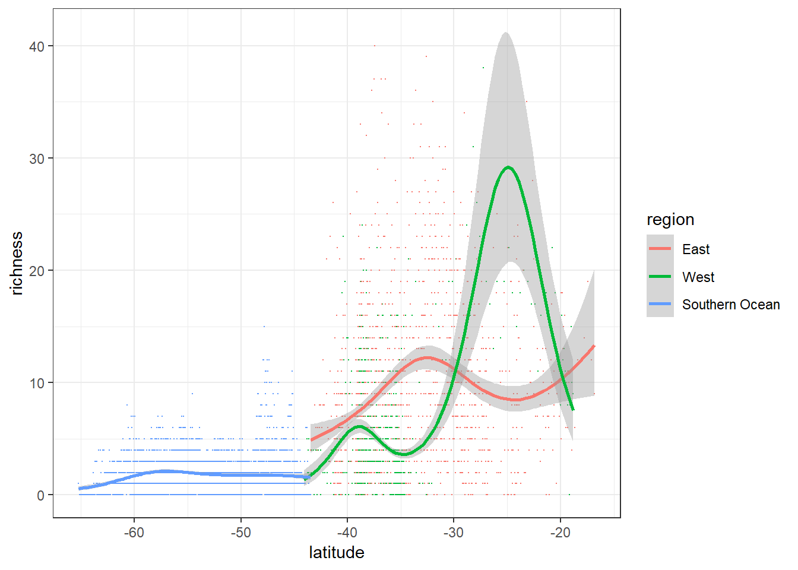
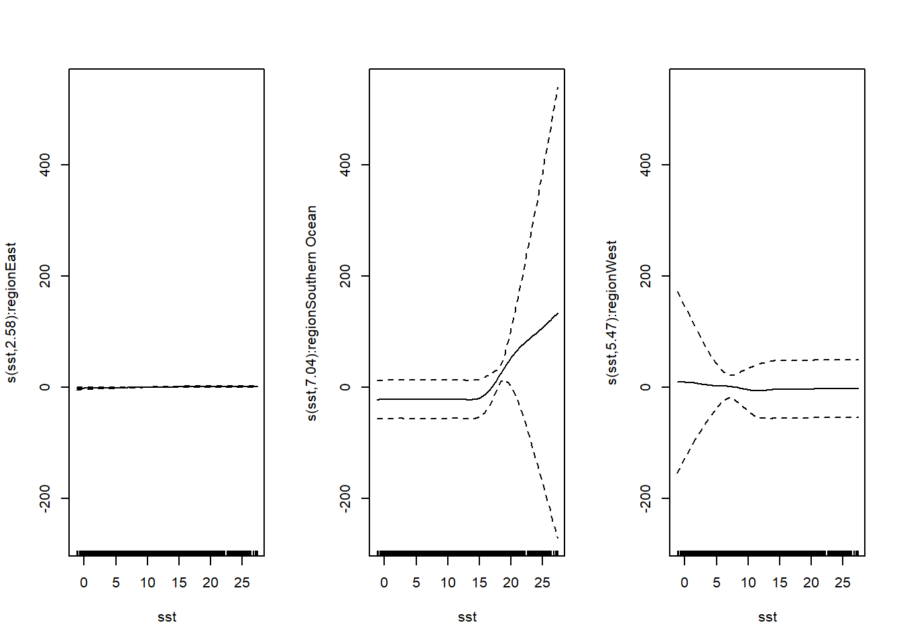

Data wrangling visualisation and spatial analysis: R Workshop
Dr Chris J. Brown (Griffith University, chris.brown@griffith.edu.au, Twitter: @bluecology)
Professor David Schoeman (University of the Sunshine Coast, dschoema@usc.edu.au)
Professor Anthony J. Richardson (The University of Queensland and CSIRO, a.richardson@maths.uq.edu.au)
Dr Bill Venables (The University of Queensland and CSIRO, Honorary Research Fellow, Bill.Venables@gmail.com)
© 2019 Chris J. Brown, David Schoeman, Anthony J. Richardson, Bill Venables
Notes for this online content
These notes were created for an R Workshop, held at The University of Queensland 8th February 2019. But feel free to use them to teach yourself or others, they are self explanatory. If you use the notes, we’d love to hear about it on email or Twitter.
You can download the data for this course here as a zip file (< 1 Mb file).
The course will take a day or more to complete (our workshop was 1 day, but we skipped a few sections).
Introduction
The aim of today’s course is to train you in data wrangling, visualisation, spatial analysis and mapping. We’re going to focus on some popular packages for these tasks, many of which are drawn from a group of packages known as the ‘tidyverse’.
We’ll get into the details of the tidyerse and other packages later, but just for now know they are very useful tools for a whole range of activities we commonly need to do as quantitative scientists, including combing different data-sets, error checking, stats, creating publication quality graphs and creating interactive maps.
We’re aiming to give you a realistic experience, so today’s course will be based around a particular project that requires wrangling data, building up analysis and creating maps.
Now just imagine…
You’re close to finishing your PhD on plankton ecology and just need to do one final chapter. You’re supervisor isn’t being much help (he’s off on a global trek promoting his new book).
You’re at the International Plankton Symposium (IPS2020) and you gather the courage to talk to Professor Calanoid, your academic hero. After enduring a long rant about Professor Salp’s plenary talk (“she’s just a backboneless filter feeder who doesn’t do any real research herself”), Prof Calanoid mentions that she’s read your first PhD paper on zooplankton biogeography.
Prof Calanoid was impressed with the extent of R analysis in your biogeography paper and goes onto suggest you collaborate on a new database she is ‘working with’.
The database has extensive samples of copepod richness throughout Australia’s oceans and the Southern Ocean too. Prof Calanoid has a hypothesis - that like many organisms, copepod species richness (just the number of unique species) will be higher in warmer waters than cooler waters. But she needs help sorting out the data and running some stats.
It will be a super easy paper for you, just do some of your R stuff and you will be a coauthor. It will likely be published in the top journal, The Nature of Plankton.
Of course, if you do this job she will support your fellowship application to the International Plankton Research Insitute.
All you have to do is sort out the copepod data, match it to ocean temperature data and run some stats to test this hypothesis.
Prof Calanoid also wants you to make some flashy graphs to put in the paper, and make an interactive map of the data that they can share with their funders.
Oh and time is short, this is an open-access database, so Prof Calanoid needs this done in the next 3 weeks so that she can submit a paper on it before Professor Salp does. So better drop all your other commitments.
The copepod example data
Professor Calanoid sends you the data files. The spreadsheet copepods-raw.csv has measurements of copepod species richness from around Australia. Copepods are a type of zooplankton, perhaps the most abundant complex animals on the planet and an important part of ocean food-webs. Prof Calanoid has also sent you some other data, but has not explained what that is for yet. You’ll have to figure that out.
Copepod species were counted using samples taken from a Continuous Plankton Recorder. The CPR was towed behind ‘ships of opportunity’ (including commercial and research vessels). ‘Silks’ run continuously through the CPR and the plankton are trapped onto the silks, kind of like a printer that runs all day and night to record plankton in the ocean.
(The data we’ve given you are in fact modified from real data, provided by Professor Ant Richardson. Ant runs a plankton lab that is collecting and processing this data from a program called AusCPR, find out more here.
So Prof Calanoid’s data is what we’ll work with today. We’ve tried to make this as realistic a learning experience as possible. So be ready to face some errors in the data from Prof Calanoid!
So now we’re almost ready to start the course. But before we get started, there are a few technical things you need to know about how we will use R today.
R versions and Packages required
We’re going to assume you’re using the lastest version of R (3.5.2) and in the course we will use the RStudio editor.
To work through these notes you will need to install the add-on packages readr, tidyr, ggplot2 and dplyr. Or you can just get the package tidyverse which has these and more. You will also need maps, raster, leaflet, RColorBrewer and mgcv.
Data
We’ve provided all the data from Professor Calanoid in a sub-folder data-for-course (if you are looking at this on my blog, you’ll need to download, rename and unzip the datafile). The easiest way to start is just to open the file data wrangling and spatial course.r with Rstudio and start coding there.
If Rstudio is already open when you open the script, then don’t forget to set the working directory with setwd() or under the ‘Session’ menu.
If you make your own scripts, you should save them with the data folder as a subfolder and everything should work fine.
Your knowledge of R
This isn’t an absolute beginner course, so we going to assume you have some knowledge of R already. If you are an absolute beginner, then you should take our other course.
We will assume you have at least basic understanding of how R works (e.g. scripts, console, how to access data and what a ‘package’ is). As a guide you should already be able to read data into R using R code (ie not using the menus in Rstudio) and create some basic plots.
The code in these notes is however complete, so you can run this entire course successfully without having to ‘know’ anything. Though it will be better for your own learning if you type the code out yourself.
If you get an error, well done! That is a chance to learn for the real world. So ask one of us for help. And if you don’t understand something, also don’t be afraid to just ask one of us for help.
4.1 Data wrangling and plotting with tidyverse
Introduction
What’s the deal with ‘data wrangling’
The modern quantitative scientist has to know a lot more about working with databases and data analysis than in the past. Scientists are increasingly integrating a large variety of data-sets into their work. These analyses require matching data-sets that may have been entered in different ways, or cover different temporal and spatial scales.
All of these procedures can be termed data wrangling. In this course we are going to learn how R can be used for data wrangling. We’re going to work through a ‘realistic’ case-study.
As expert R users we have often been faced with situations where a collaborator has asked us to ‘just run some numbers’ on a dataset, and be rewarded with an ‘easy’ paper.
Easy is often far from the truth. And the time-consuming part isn’t the stats. It’s error checking and getting it into the right shape that takes a lot of time. And then often we need to match up the new data to existing data-sets, such as when we want to know whether the spatial distribution plankton correlates with ocean temperature.
If you have to deal with large data-sets you may realise that data wrangling can take a considerable amount of time and skill with spreasheets programs like excel. Data wrangling is also dangerous for your analysis- if you stuff something up, like accidentally deleting some rows of data, it can affect all your results and the problem can be hard to detect.
Why data wrangling in R?
It makes sense to do your data wrangling in R, because today R is the leading platform for environmental data analysis. You can also create all of your visualisations there too. R is also totally free. R is a powerful language for data wrangling and analysis because
- It is relatively fast to process commands
- You can create repeatable scripts
- You can trace errors back to their source
- You can share your wrangling scripts with other people
- You can conveniently search large databases for errors
- Having your data in R opens up a huge array of cutting edge analysis tools.
A core principle of science is repeatability. Creating and sharing your data scripts helps you to fulfill the important principle of repeatability. It makes you a better scientist and can also make you a more popular scientist: a well thought out script for a common wrangling or analysis problem may be widely used by others. In fact, these days it is best practice to include your scripts with publications.
Most statistical methods in R require your data is input in a certain ‘tidy’ format. This course will cover how to use R to easily convert your data into a ‘tidy’ format, which makes error checking and analysis easy. Steps include restructuring existing datasets and combining different data-sets. We will also create some data summaries and plots. We will use these data visualisations to check for errors and perform some basic analysis. Just for fun, we will finish by creating a web based map of our data.
The course will be useful for people who want to explore, analyse and visualise their own field and experimental data in R. The skills covered are also a useful precusor for management of very large datasets in R.
The main principles I hope you will learn are
- Data wrangling in R is safe, fast, reliable and repeatable
- Coding aesthetics for readable and repeatable code
- How to perform simple analyses that integrate across different data-sets
Copepod data
Remember Prof Calanoid? Well let’s get started with that copepod richness data. In this part of the course we are going to clean it up and run some basic analyses.
Fire up RStudio, start a new R script (just click the symbol with the little green plus) and save the script it in the same folder as where you have ‘data-for-course/’ as a sub-folder. You might like to call your script copepod-wrangling.R.
We always start our scripts with some comments that include a description of goals, our name and date. So do that too.
Loading data
Now let’s look at that first spreadsheet Prof Calanoid sent us. We don’t know the data well, and Prof Calanoid hasn’t told us much about it (or sent us any meta-data on what it all means), so we will want to do some thorough checks and visuals before we run any analyses.
This mirrors situations that all of us (Dave, Ant, Bill and Chris) of us have often come across. We are given data by collaborators, so we need to check and do some visuals on it before we do the analysis, to make sure we understand it well and avoid errors.
It is common to see people hired to do an analysis of a ‘complete’ data-set, but it ends up taking them the entire contract just to sort out the data, which weren’t really complete after all. R can help speed up this process, so the analysis (what you’re ultimately paid to do) gets done.
We will load in the data using a package from the tidyverse called readr. readr is handy because it does extra checks on data consistency over and above what the base R functions do. Data frames imported by readr also print in summary form by default. Let’s see how:
library(readr)
dat_input <- read_csv("data-for-course/copepods_raw.csv")
dat_input# A tibble: 5,313 x 11
silk_id segment_no latitude longitude sample_time_utc project route
<int> <int> <dbl> <dbl> <chr> <chr> <chr>
1 1 1 -28.3 154. 26/6/09 22:08 AusCPR BRSY
2 1 5 -28.7 154. 26/6/09 23:12 AusCPR BRSY
3 1 9 -29.0 154. 27/6/09 0:17 AusCPR BRSY
4 1 13 -29.3 154. 27/6/09 1:22 AusCPR BRSY
5 1 17 -29.7 154. 27/6/09 2:26 AusCPR BRSY
6 1 18 -29.8 154. 27/6/09 2:43 AusCPR BRSY
7 1 26 -30.4 153. 27/6/09 4:52 AusCPR BRSY
8 1 30 -30.7 153. 27/6/09 5:57 AusCPR BRSY
9 1 33 -31.0 153. 27/6/09 6:45 AusCPR BRSY
10 1 37 -31.3 153. 27/6/09 7:50 AusCPR BRSY
# ... with 5,303 more rows, and 4 more variables: vessel <chr>,
# meanlong <dbl>, region <chr>, richness_raw <int>(if you want to print the entire data frame, then use this code: data.frame(dat_input) to turn it back into a base R data frame).
In this data you will see a silk_id column, which is just the ID for each of the silks, onto which plankton are recorded. For processing, silks are divided into segments, so you will also see a segment_no column. The other columns are pretty self explanatory.
Initial checks for errors and visuals
It’s a good idea to do some visuals with new data to check they are in shape.
We will be learning ggplot2 for graphics in this course, it is part of the tidyverse and has some pretty powerful tools for quickly creating plots.
You might like to download RStudio’s ggplot cheatsheet for reference.
Checks on the coordinates
Now we are ready to make a graph. Type this into the console:
library(ggplot2)
ggplot(dat_input, aes(x = longitude, y = latitude)) +
geom_point()
Which just shows the location of every segment. You can kind of see the CPR surveys wrapping around the coast of Australia.
The function ggplot() creates a graph, rather than returning data like the other ‘normal’ functions You can read the above line as: Take dat_input, create an aes (aesthetic) where the x-axis is longitude and the y-axis is latitude, finally add (+) a points ‘geom’.
The ‘gg’ in ggplot stands for grammar of graphics. The intent of this package is to turn a sequence of functions into a readable sentence, which is why we separate two different functions (ggplot() and geom_point()) with a +. You can combine different functions into different sequences to create different types of graphics.
Now, let’s plot lines instead of points. We will add a group command to make sure lines from different ‘silks’ aren’t connected (try the below without the group = silk_id if you want to see what we mean).
ggplot(dat_input, aes(x = longitude, y = latitude,
group = silk_id)) +
geom_line()We can also colour the silk IDs:
ggplot(dat_input, aes(x = longitude, y = latitude,
group = silk_id, color = factor(silk_id))) +
geom_line() +
theme(legend.position="none")We’ve added a theme here to remove the legend. We did this because there are so many silks the legend ends up WAY bigger than the plot itself. We also wrapped factor around silk_id in the colour command, so that silk IDs (which are numbers) would be treated as discrete color levels, rather than a continuous measure.
Once again, you can try the above with the factor to help your understanding.
So far so good, now let’s look at the richness data, our main variable for analysis
Checks on richness
Let’s do our plot of locations again, but this time colour by copepod species richness:
ggplot(dat_input, aes(x = longitude, y = latitude, color = richness_raw)) +
geom_point()Looks the same as before, but note the legend, which is now coloured by species richness. One of the smart things that ggplot2 does is automatically scale axes based on the range of all the data we’ve plotted. This means our locations always fit nicely within the space of the map.
The colours are also an ‘axis’, note that ggplot has them going to all the way to about -1000. This is a bit odd, and suggests that there are richness values that are close to -1000 (though we might not be able to see them under the other points). Obviously we can’t have negative species richness values, that makes no sense.
Let’s try another plot of latitude versus richness to see if we can figure out what is going on.
ggplot(dat_input, aes(x = latitude, y = richness_raw)) +
geom_point()Ah, so most of the data are smallish (<100) positive values. But there are maybe three values near -1000. Glad we found those outliers before we ran any stats for Prof Calanoid. The results would’ve been junk and we don’t want to embarrass ourselves in front of Prof Calanoid.
Correcting errors
Let’s use some logical indexing to learn more about these outliers before we ask Prof Calanoid about them.
dat_input$richness_raw < 0The above command just returns TRUE/FALSE for rows have values less than (or greater than) zero. We can fold this back into a call to the data-frame to see what those rows are:
subset(dat_input, richness_raw < 0 )Ah, so they are all -999. In some programs, this value indicates missing data. Let’s email Prof Calanoid and ask about them.
Prof Calanoid fires an email straight back, apologising, and telling you that these are a hang-over from old software their assistant used and should actually be richness_raw = 0.
So what we need to do now is change all the -999 to 0.
Perhaps the most familiar way for you is to use a spreadsheet editor to fix the -999. But this is an R course, so we will use R!
From R you could do this:
dat_corrected <- edit(dat_input)Then make your changes in the editor that pops up and it will save the new data frame to dat_corrected.
But that is slow and tedious with large datasets. It is also not repeatable.
What we want to do is use R to identify the mistakes, then correct them and create a new data frame. So let’s use our logical indexing again:
dat <- within(dat_input, {
richness_raw[richness_raw < 0] <- 0
})We copied dat_input to a new dataframe dat and corrected the -999 in dat.
Let’s have a look at our graphs again:
ggplot(dat, aes(x = longitude, y = latitude, color = richness_raw)) +
geom_point(size = 0.4)Looks better (note the scale of the colour axis).
You might want to use logical indexing to double check all the values are really positive. This command will ask if any value is <0:
any(dat$richness_raw<0)[1] FALSEAt this point we might want to save the ‘corrected’ data frame as an external file, then only work with that one in the future:
write_csv(dat, "data-for-course/copepods-corrected.csv")But we should still keep the code above we used to correct it. Why? If someone ever wants to repeat what we’ve done, they can follow our code and correct the mistakes too. What would happen if it turns out the -999 were instead meant to be NA (missing data) rather than 0? Well a future analyst could easily see we used 0 instead of NA.
Let’s do the latitude plot too. This is really a key plot for us, because we know that temperatures tend to get warmer at lower latitudes. So, if Prof Calanoid’s hypothesis is right, we are expecting to see here a decline in richness at higher latitudes:
ggplot(dat, aes(x = latitude, y = richness_raw)) +
geom_point()Something looks odd with this graph (and the map too), because we expected a strong gradient in richness with latitude. Well, at least we have some results.
Saving ggplots as a png file
Let’s save this figure and email it to Prof Calanoid to get their opinion. At least they will be happy to hear we are making progress:
cope_graph <- ggplot(dat, aes(x = latitude, y = richness_raw)) +
geom_point()
ggsave("Richness-latitude.png", cope_graph)ggsave is just a function for saving ggplots. Try ?ggsave for other options, like changing the figure size, resolution, or file type. The only other trick we used above was to save the ggplot to a variable name, cope_graph. This meant we could drop that variable name into ggsave, which identifies which figure we want to save.
Introduction to dplyr package
dplyr stands for ‘data pliers’. Along with tidyr it is one of the most useful packages for getting your data into shape for analysis. dplyr is part of the tidyverse so it plays very nicely with ggplot2 and readr.
One of the nice things about dplyr is that the core code isn’t written in R, it is written in C++. This means it runs a lot faster than many of the base R functions. You won’t notice much difference today, but you will if you ever work with very large data-sets.
dplyr joins
One thing dplyr is good at is joining data frames by matching columns. Try type ?inner_join in your console and you will get a list of all the join types it supports. If you go further there are even extension packages, like fuzzyjoin that let you join on partial matches (but we won’t cover those today).
Today we will just use inner_join. Below, the code will join dat to the routes data using columns with the same names to match by. It will keep all rows from dat where there are matching rows in routes, so if rows don’t match, they will be chucked out (use left_join if you want to keep rows in dat that don’t match too). inner_join will also duplicate rows if there are multiple matches (this potential to duplicate data is something we will come back to later).
So learning about joins has given Prof Calanoid time to write back to us about the figure we sent. The results are junk as we suspected. Prof Calanoid has now explained that we need to standardize richness estimates, because silks from different routes have different sizes.
Prof Calanoid had already provided the silk sizes in a file Route-data.csv, but had neglected to tell us we needed to use this for a standarisation (typical!). No worries though, we can use our join skills to match the routes data and silk sizes to our richness data and then the standarization will be easy right?
routes <- read_csv("data-for-course/Route-data.csv")Have a quick look at routes now to make sure you are happy with it. Then we will just use inner_join (making sure we check the number or rows stays the same):
dat_std <- inner_join(dat, routes)
nrow(dat)[1] 5313nrow(dat_std)[1] 6991Um, how come the number rows has increased after the join?
Dangerous joins
Joins are a very important but very dangerous data wrangling operation! You must always choose your join type carefully. For instance, inner_join vs left_join vs full_join will all give the same result for some datasets, but not others.
Even after you think you know what you are doing, you still need to check the outcome. As we explained above, you can lose samples that don’t match, or duplicate samples that match multiple times. I (CB) have made (and thankfully corrected) this mistake many times, often because of small inconsistencies in the data I was provided, like when some site names have all lower case, and a handful have title case.
We don’t say this to put you off joins, they are one of the most useful data wrangling tasks you can do in R, but just be careful.
So let’s do a bit more of a thorough check of the routes data:
nrow(routes)[1] 28length(unique(routes$route))[1] 25Oops. The routes data they gave us has duplicate entries. So let’s now check if duplicated routes have some matching data
idup <- duplicated(routes$route)
dup_routes <- routes$route[idup]
filter(routes, route %in% dup_routes)# A tibble: 6 x 7
route project number_segments meanlat meanlong silk_area region
<chr> <chr> <int> <dbl> <dbl> <int> <chr>
1 BRFI AusCPR 14 -24.3 160. 2 East
2 FRBO AusCPR 47 -24.0 115. 2 West
3 HOAN SOCPR 1617 -52.7 133. 8 Southern Ocean
4 BRFI AusCPR 14 -24.3 160. 2 East
5 FRBO AusCPR 47 -24.0 115. 2 West
6 HOAN SOCPR 1617 -52.7 133. 8 Southern OceanLuckily the duplicated routes have the same matching variables (silk_area etc…), if they didn’t we’d have to go back to the data provider and find out which ones were correct. But since they are the same, we can just remove the duplicates. This is easy with a dplyr function distinct(), which selects distinct entries:
routes2 <- distinct(routes)
nrow(routes2)[1] 25Now try the join again, and do a few checks to make sure it worked as expected.
dat_std <- inner_join(dat, routes2)
nrow(dat)[1] 5313nrow(dat_std)[1] 5313
sum(dat$segment_no == dat_std$segment_no)[1] 5313plot(dat$segment_no, dat_std$segment_no)
So the new and old dataframes have the same number of rows and the segment numbers are the same in the new and old data, which means inner_join has just appended on the new route variables and left the rest unchanged.
Adding new variables
Once we have a matching silk_area value for each sample, it is easy to add a new variable that is standardised richness. To do this we use mutate which just takes exisiting variables and calculates a new variable (or overwrites an existing one if we give it the same name). In addition to the standardised variables, we will also calculate the number of species per individual observed.
dat_std <- mutate(dat_std,
region = factor(region, levels = c("East", "West", "Southern Ocean")),
richness = richness_raw/silk_area)We’ve also made region a factor, which means we get to choose the order of the levels. This will be handy later.
Ok, let’s plot standardized richness so we can send a new graph to Prof Calanoid:
ggplot(dat_std, aes(x = latitude, y = richness)) +
geom_point()Do you see a pattern now?
We should also save the standardised data for use later:
write_csv(dat_std, "data-for-course/spatial-data/copepods_standardised.csv")Styling ggplot
This time we want to impress Prof Calanoid a bit more by sending a graph that looks a bit flashier. Changing the graph’s look can also help us better communicate the pattern. So we will learn about styling in ggplot2.
To change the look of a ggplot, just keep using the + to add on new layers or change the theme. For instance, we can use a built in theme bw like this:
ggplot(dat_std, aes(x = latitude, y = richness, color = richness)) +
geom_point() +
theme_bw()Try theme_classic() if you want it to look like a regular R plot.
We can go further and add axis labels, and choose our own colour scale (using the package RColorBrewer) like this:
library(RColorBrewer)
ggplot(dat_std, aes(x = latitude, y = richness, color = richness)) +
geom_point() +
xlab("Latitude") +
ylab("Richness") +
theme_bw() +
theme(panel.grid.major = element_blank(), panel.grid.minor = element_blank()) +
scale_color_gradientn(colours = brewer.pal(7,"YlGn")) +
guides(color=guide_legend(title="Copepod richness"))
The theme commands change it to the BW theme first of all, then another theme command to modify the plot to remove the the grid lines. The commands are evaluated in order of appearance, so make sure theme goes after theme_bw otherwise we will just get the settings from theme_bw overwriting our changes (try it!).
The bit about element_blank() is a peculiar ggplot command for getting rid of something we don’t want. Personally I (CB) can never remember this stuff, so I am always googling things like ‘remove grid ggplot’ to get the answers. This is common among professional programmers, so don’t worry if you do it too.
The scale_color_gradientn just creates a continuous colour scale out of a discrete sequence of colours (RColorBrewer gives us just 7). Check out http://colorbrewer2.org/ for other ideas for colour palettes.
The guides command is just there to let us change the colour legend title.
Graphics with stats in ggplot2
So our graph looks cleaner now, but what about adding a trend-line, so we can see if all the noise in Prof Calanoid’s data amounts to a real trend or not. Well one nice thing about ggplot is that it can add many different types of trend lines for quick visual assessment without having to think about building a model in R!
We can just + a ‘smooth’ like this:
ggplot(dat_std, aes(x = latitude, y = richness, color = richness)) +
geom_point() +
geom_smooth() +
theme_bw()The little message informs us that the spline is cubic regression spline (‘cs’) made with ‘gam’ (generalized additive model).
We can be more picky about how the spline looks by specifying some additional options:
ggplot(dat_std, aes(x = latitude, y = richness, color = richness)) +
geom_point() +
geom_smooth(method = "gam", formula = y ~ s(x, k = 5),
method.args = list(family = "poisson")) +
theme_bw()So this time we’ve limited the degress of freedom of the spline, so it can’t be too ‘bendy’. We’ve also asked gam to use a quasi-Poisson distribution (default is Gaussian), because our data are discrete counts of the number of species.
This is good for visual checking, but doesn’t tell us much about how the GAM performed. To do that we need to go back to the basic R code for building that model. For instance, we could build the above model like this:
library(mgcv)
m1 <- gam(richness ~ s(latitude, k = 5), data = dat_std,
family = "poisson")
plot(m1)
summary(m1)And so on, you can get all the stats you need from that to write up, but use ggplot to do the graphics, which is easier than trying to build them up from the basic code above yourself.
So we send the results of our GAM to Prof Calanoid and we get the response:
“The poisson model you use for your GAMs is clearly pretty bad and potentially misleading. It is very overdispersed, as such models often are. I would suggest changing to a negative binomial. The catch is you have to supply theta (the dispersion parameter). A good way to pick one is just to start with a trial value and adjust it until your deviance matches your df.residual fairly closely.”
So we tried that and in this case negbin(theta = 1.548) does a pretty good job, and much more restrained than the poisson. It does make a difference. Let’s have a look:
deviance(m1)
m1$df.residual
m2 <- gam(richness ~ s(latitude, k = 5), data = dat_std,
family = mgcv::negbin(theta=1.548))
deviance(m2)
m2$df.residual
plot(m2)
summary(m1)Note the broader standard-errors, which reflect the increased uncertainty about the mean in the negative binomial. We’ll use the negative binomial in our ggplots from now on.
Multipanel ggplots
ggplot isn’t limited to single panel plots. And its just as well, because we have a sneaking suspicion that Prof Calanoid might have neglected to tell us something else about the data.
You might have noticed the CPR data covers both the East and West Coast of Australia, and the Southern Ocean. Well it would be fair to say that different ocean basins might have slightly different latitudinal patterns of richness.
So let’s investigate patterns by different oceans. You may have noticed that their is a region variable in the routes data frame. Well that is joined into our standardized samples, so why don’t we start by just plotting the samples coloured by regions to check it out:
ggplot(dat_std, aes(x = longitude, y = latitude, group = region, color = region))+
geom_point()Looks like a good place to start. We could plot all the results, colouring by ocean basins like this:
ggplot(dat_std, aes(x = latitude, y = richness, color = region, group = region)) +
geom_point(size = 0.1) +
geom_smooth(method = "gam", formula = y ~ s(x, k = 5),
method.args = list(family = mgcv::negbin(theta = 1.548))) +
theme_bw()Warning in newton(lsp = lsp, X = G$X, y = G$y, Eb = G$Eb, UrS = G$UrS, L =
G$L, : Fitting terminated with step failure - check results carefully
Notice that the use of group = region has meant that ggplot applies the smooth by regions too. Pretty handy, now we can see what looks like an interaction between latitude and East vs West. It also looks like the southern ocean pattern is a continuation of the West coast pattern.
(I used size just to shrink the points so the smooths stand out).
These results are pretty exciting because they suggest biogeographic breaks where the humps occur. If warm and cold water species mix at biogeographic breaks, then we might see a sudden jump in richness, as opposed to our original hypothesis that was there would be a steady increase in richness to warmer waters.
However, when we email this plot to Prof Calanoid, she complains that the East and West data look too similar. Why might that be?
Since this plot is a bit busy, it might help Prof Calanoid see these stunning results if we do ‘facets’ by regions.
ggplot(dat_std, aes(x = latitude, y = richness, color = richness)) +
geom_point() +
facet_grid(region~.) +
theme_bw()facet_grid adds the facets. The region ~. simply means add regions in rows versus nothing (.) in columns. If we replacted the . with another category, like project it would create a grid with rows and columns. Try it yourself.
It is pretty clear now that we have to be careful with this comparison, because there is no overlap in latitude between the Southern Ocean and the other regions.
We can easily add the smoothers to our grid too:
psmooth <- ggplot(dat_std, aes(x = latitude, y = richness, color = richness)) +
geom_point(size = 0.1) +
geom_smooth(method = "gam", formula = y ~ s(x, k = 5),
method.args = list(family = mgcv::negbin(theta=1.548))) +
facet_grid(.~region) +
theme_bw()
psmoothWe wanted to compare the smooths across regions, so we’ve put regions all on one row this time. These have been called ‘super plots’ because you can do a quick visual check for interactive effects very easily using these kind of plots.
And let’s just save that plot for Prof Calanoid
ggsave("Richness-lat-smoothers.png", psmooth,
width = 12, height = 4)“Much better” she responds. “Interesting about your biogeographic breaks hypothesis too.”"
Convenience and frustration with ggplot2
ggplot is great, because you can make quite complex plots very quickly. The key skills are (A) to understand that it is just layering different components and (B) how to structure your data frames for ggplot.
ggplot likes long format data, so each variable should be in a single column. It wouldn’t work so well for instance if we had richness for different variables recorded in different columns.
If get you competent at tidying your data frames in R, then getting decent ggplots quickly will become easy for you. Your plotting life will seem good until one day, you decide you want to change the colours, or the legend, or the order of panels or some other detail. Then very quickly you will find yourself bashing your head against your monitor in frustration (at least I do). That’s the thing about ggplot, its really convenient, until suddenly it isn’t. Some things that are a pain are:
Customising themes or at least remembering how to do this (remember those grid lines)
Getting colour palettes right
Getting categorical variables in ordered the way you want, so facets or legends or axes are ordered the way you want (the default is just alphabetical).
Putting the little (a), (b), (c) labels on the top of plots.
ggplot facets won’t plot different types of variables for you, they are designed to plot different categories for the same variable.
Tips for handling frustrating ggplot2 situations
Try packages with built in themes for scientific papers, like
cowplot.Design your own custom themes and then always use them.
Just google things like ‘remove legend from ggplot’ (My personal favourite). Stackoverflow almost always will provide you with an answer
If you are trying to make panels for different variables, then look into the package gridExtra. It lets you arrange ggplot panels into a single page and print it.
Plots that ggplot makes it hard for you to do on purpose
ggplot has opinions about the types of plots you should and shouldn’t do (see it adds gridlines as a default!).
ggplot doesn’t like plotting different variables on the same panel. It can be done (using the data argument to geoms like geom_line), and sometimes is desirable, for instance, if you want to plot model predictions over data points. Don’t even think about trying y-y plots (you shouldn’t use them anyway, they are misleading). If you are thinking about a y-y plot you probably want to do a correlation or a facet instead.
Summaries with dplyr
All the plots and pretty smooths are nice, but Prof Calanoid wants us to know that she is a hard numbers person (maybe that’s why she seems so obsessed with comparing her H-index to Prof Salp’s H-index?). So we better compute some numbers too. Prof Calanoid is interested to see how richness changes according to the different survey routes.
To do this we’re going to get into grouping with the group_by function.
group_by is an odd function in that it does nothing to the data in the dataframe. All it does is set-up for a summary, by adding a tag saying what to group the data by. Its what we do after the group_by that really makes a difference.
Let’s see it in action.
nrow(dat_std)[1] 5313datg <- group_by(dat_std, route)
nrow(datg)[1] 5313Look at datg to convince yourself that nothing has changed. But note that if you type datg into the console it will print out Groups: route [25] now, indicating the data is grouped by 25 routes.
What we want to do is put group_by together with a summarize:
datg <- group_by(dat_std, route)
dats <- summarize(datg,
mean_rich = mean(richness),
sd_rich = sd(richness))
dats# A tibble: 25 x 3
route mean_rich sd_rich
<chr> <dbl> <dbl>
1 ADFR 3.82 4.05
2 ANHO 1.95 1.81
3 AUHO 7.86 4.89
4 BRER 8.73 8.68
5 BRFI 3.93 3.52
6 BRGL 13.7 6.99
7 BRNC 8.63 7.07
8 BRSY 11.6 8.22
9 BUNE 4.60 2.79
10 FRBO 16.1 6.39
# ... with 15 more rowsAnd we get a nice summary table of means and standard deviations by routes. To understand the groups a bit better try the summarize on the ungrouped data.
summarize(dat_std, mean_rich = mean(richness),
sd_rich = sd(richness))# A tibble: 1 x 2
mean_rich sd_rich
<dbl> <dbl>
1 4.32 5.49And see we just get one value for the mean and SD each for the entire data frame.
Piping
To run multiple steps like those above we can use a handy dplyr feature called pipes. A pipe looks like this %>%. What it does is pipe the output of one function into the first argument of the next. For instance, these too lines of code do the same thing:
group_by(dat_std, route)
dat_std %>% group_by(., route)The argument (dat_std) before the %>% just gets dropped into the place where I’ve put the .. Pipes are handy for chaining together multi-step operations on dataframes, like grouping and summaries:
dats <- dat_std %>% group_by(., route) %>%
summarize(., mean_rich = mean(richness),
sd_rich = sd(richness))If we wanted to write that on one line we have to embed function calls inside each other, which gets tricky to read for long sequences of steps:
dats <- summarize(group_by(dat_std, route),
mean_rich = mean(richness),
sd_rich = sd(richness))Finally, in a pipe, you can even drop the ., so it would just be like this:
dats <- dat_std %>% group_by(route) %>%
summarize(mean_rich = mean(richness),
sd_rich = sd(richness))I like pipes, because they read in order like a sentence: “first take dat_std, then group it, then summarize it”.
Wrapping up…
That’s pretty much the course for the first session. There’s a bit more below that we will tackle if there is time, or feel free to look into at a later time to learn some handy tricks.
Bonus material
Grouping and mutating
Groups are also handy way to calculate percentages and proportions by groups (normally a fiddly operation). For instance, try this plot of proportional richness:
datprop <- mutate(dat_std, prop_rich = richness/max(richness))
ggplot(datprop, aes(x = latitude, y = prop_rich)) +
geom_point() +
facet_grid(region~.)And we get facets of richness as a proportion of the sample with the maximum overall richness. But what if we want to do the plots with proportions of the max within each region?
Too easy, just group by region first:
datg <- group_by(dat_std, region)
datprop <- mutate(datg, prop_rich = richness/max(richness))
ggplot(datprop, aes(x = latitude, y = prop_rich, color = richness)) +
geom_point() +
facet_grid(region~.)Notice now that the values go all the way to 1 for every region, so proportional richness values are by regions now. (I added colours by richness just to be a bit fancy).
Standard errors
Above we calculated standard deviations, but we might like to show standard errors too. Remember for the SE we have to calculate sample size first (SE = SD/sqrt(n)).
The n() function is pretty handy for calculating samples sizes.
datg <- group_by(dat_std, route)
dats <- summarize(datg,
mean_rich = mean(richness),
sd_rich = sd(richness),
nsamples = n(),
se_rich = sd_rich/sqrt(nsamples))To explain. n() has just calculated the sample size by each group. Then we use that variable in our SE calculation (remember that we can use variables straight after we create them in mutate arguments).
To see the results, lets do a ggplot with error bars on it:
ggplot(dats, aes(x = route, y = mean_rich)) +
geom_point() +
geom_linerange(aes(ymin = mean_rich - se_rich, ymax = mean_rich + se_rich)) The geom_linerange() just adds the error bars (you can also try geom_errorbar()), which we’ve specified as ranging from a ymax of the mean + SE to a ymin of the mean - SE.
Reshaping data
Prof Calanoid also sent us some abundance data. Abundances of copepods are not our main interest, but if we have time, let’s take a look.
dat_abund <- read_csv("data-for-course/copepods_abundance.csv")
nrow(dat_abund)[1] 179length(unique(dat$silk_id))[1] 179ncol(dat_abund)[1] 110length(unique(dat$segment_no))[1] 109So it looks like the abundance data has the same number of rows as the number of unique silk IDs in the richness data. It also has the same number of columns as the number of unique segment numbers.
It seems Prof Calanoid’s abundance data is in ‘wide’ or table format, with rows as silk IDs, columns as segment numbers and values are the abundances.
Our richness data was in ‘long’ format. Long format tends to work better with most R packages, including ggplot and most stats packages (though there are of course annoying exceptions). In long format data, each variable has its own column and rows are samples.
So we want to reshape the wide format data into long format data, so we can match it to the richness data (and get the longs and lats etc.).
To reshape it into long-format data, we can use the tidyr package.
library(tidyr)
dat_abund <- gather(dat_abund, segment_no, abundance_raw, -silk_id, na.rm = TRUE)The function gather turns the table of abundances in dat_abund into a column of abundances. How it does this reshaping is a bit like origami, so can be hard to conceptualise. But here we go.
There will be two new columns replacing the table of abundances: one called segment_no that has the column names (segment numbers), and another column called abundance_raw that has abundances in it.
We’ve specified -silk_id which means silk ID will be kept outside the refolding, so it will remain as a column (and be replicated for all the new rows).
Finally, na.rm = TRUE removes the empty cells that had no abundances. There were empty cells because not every silk ID had every segment number.
Now let’s check out how the gathered data frame looks:
dat_abund# A tibble: 5,313 x 3
silk_id segment_no abundance_raw
* <int> <chr> <dbl>
1 1 1 2.00
2 2 1 2.00
3 3 1 2.00
4 4 1 0.
5 5 1 0.
6 6 1 6.00
7 7 1 11.3
8 8 1 12.0
9 9 1 34.0
10 12 1 52.0
# ... with 5,303 more rowsLooks ok, save for one tiny detail. Can you see it? If not, don’t worry about it for now, just know we will hit an error in a moment. Joining data frames
Now we want to join our abundance data to the richness data by ‘segment numbers’. Why don’t we just append the abundance data onto the richness data? Well they may not be in the same order. Let’s check it by plotting the richness segment numbers against the abundance segment numbers them:
plot(dat_abund$segment_no, dat$segment_no)
abline(0,1)Let’s try a join:
dat_all <- inner_join(dat, dat_abund)How did you go? Did R throw an error? Don’t worry it was all part of our plan. Let’s try and debug it. First you need to read the error message. Much of it may not make sense, but we just need a clue to get started (even the best of us R programmers can’t always make complete sense of an error message).
The most comprehensible part of the message says the two segment_no columns are incompatible types. Well they are meant to be numbers, but let’s check if something went wrong when we just created the abundance data
dat_abund$segment_no[1:10] [1] "1" "1" "1" "1" "1" "1" "1" "1" "1" "1"class(dat_abund$segment_no)[1] "character"Notice the quotes around the numbers? So gather has turned the numbers into character types. We need to convert them back so inner_join works. That is easy as:
dat_abund$segment_no <- as.numeric(dat_abund$segment_no)
dat_all <- inner_join(dat, dat_abund)
dat_all# A tibble: 5,313 x 12
silk_id segment_no latitude longitude sample_time_utc project route
<int> <dbl> <dbl> <dbl> <chr> <chr> <chr>
1 1 1. -28.3 154. 26/6/09 22:08 AusCPR BRSY
2 1 5. -28.7 154. 26/6/09 23:12 AusCPR BRSY
3 1 9. -29.0 154. 27/6/09 0:17 AusCPR BRSY
4 1 13. -29.3 154. 27/6/09 1:22 AusCPR BRSY
5 1 17. -29.7 154. 27/6/09 2:26 AusCPR BRSY
6 1 18. -29.8 154. 27/6/09 2:43 AusCPR BRSY
7 1 26. -30.4 153. 27/6/09 4:52 AusCPR BRSY
8 1 30. -30.7 153. 27/6/09 5:57 AusCPR BRSY
9 1 33. -31.0 153. 27/6/09 6:45 AusCPR BRSY
10 1 37. -31.3 153. 27/6/09 7:50 AusCPR BRSY
# ... with 5,303 more rows, and 5 more variables: vessel <chr>,
# meanlong <dbl>, region <chr>, richness_raw <dbl>, abundance_raw <dbl>Looks good now! Let’s also check to see if we lost or gained any rows in the joins:
nrow(dat_all)[1] 5313nrow(dat)[1] 5313nrow(dat_abund)[1] 5313Nope, all still the same. The reason we do this is if the abundance data was missing samples that the richness data had, we would see fewer rows in dat_all.
Now let’s celebrate the join by doing a quick plot of abundance versus latitude:
ggplot(dat_all, aes(x = latitude, y = abundance_raw)) +
geom_point()
4.2 Introduction to mapping and spatial analysis in R
The copepod richness data
In the first session we tidied and analysed Prof Calanoid’s data so that we could run some analysis of the relationship between latitude and species richness. But the job isn’t done yet.
Prof Calanoid’s actual hypothesis was about sea surface temperature. She also wanted to see some maps and create an interactive map for her funders.
So in this session we are going to look at how we combine our copepod data with spatial layers for temperature so we can do some spatial analysis on the relationship between temperature and richness.
Then we will generate some predictions for species richness, and map them, like a species distribution model.
Finally we will look at creating interactive maps.
A simple map of sample sites
Let’s read in the copepod richness data, and check it out.
cope <- read.csv("data-for-course/spatial-data/copepods_standardised.csv")
head(cope)You should see four variables here. We have info on the spatial coordinates for each tow (longitude and latitude) and the ‘ship of opportunity’. Importantly, the dataframe also contains the mean richness of copepods observed in that grid cell (richness).
We can make a quick map of our data using the maps package. First install maps. Then you can use the map function to add a map, and just add points for the longitude and latitude like this:
library(maps)
map(database = 'world')
points(cope$longitude, cope$latitude)This looks ok, but we needn’t represent the entire world here. Let’s make a few modifications to our map. We can set x-limits and y-limits just like a normal plot. Also, let’s colour the land and add an axis for latitudeitudes. Good general guidance for making maps is to have the ocean white and land shaded if you are mapping sites in the ocean and vice-versa if you are mapping sites on land.
range(cope$longitude)[1] 89.6107 174.3350range(cope$latitude)[1] -65.24280 -16.80253
map(database = 'world',xlim = c(100, 160), ylim = c(-67, -10), col = 'grey', fill = T, border = NA)
points(cope$longitude, cope$latitude, cex = 0.5, col = 'grey20')
axis(2, las = 1, ylim = c(-65, -10), cex.axis = 0.7)
ylabel <- expression(paste("latitudeitude (" ^o, "N)"))
text(85, -35, ylabel, xpd = NA, srt = 90, cex = 0.8)The command axis(2, ...) added a vertical axis (use axis(1) for an x-axis). We set the ylimits of the axis and also shrunk the labels slightly using cex.axis = 0.7.
Then we created a ylabel, using expression. We used expression so we could create a degree symbol. Then we added that label using text(), which just adds a label to an existing plot at the given coordinates of x= 112 and y = -35. The command srt=90 rotates the text 90 degrees and xpd = NA allows the text to be plotted outside of the axes window. Without the xpd command, only text that was inside the map would show up.
Check out ?axis if you want to make further modifications to this axis. Some other ideas would be to add a legend using legend.
Viewing raster data
Our aim was to uncover the relationship between temperature and copepod richness. To do that we need some spatial data on temperature, so we can extract temperature at the sampling sites.
We have provided you with two files MeanAVHRRSST.gri and MeanAVHRRSST.grd which contain gridded maps of annual mean sea surface temperature from the Hadley dataset. Gridded data, also known as raster data, can be read and manipulatitudeed with the raster package. Once you have installed this package, load it in:
library(raster)We can then load and view the SST raster like this:
rsst <- raster('data-for-course/spatial-data/MeanAVHRRSST')
plot(rsst)This creates a pretty decent first plot of the raster. However, note the colour scale isn’t that appropriate for temperatures - green where temperatures are high and red where they are low. Further, these default colours wouldn’t be that great if our audience was red-green colour blind (and we suspect that Prof Calanoid is colour blind).
First, up lets’ recreate the above plot using ggplot. We need to turn the raster into a dataframe to do that:
dat_grid <- data.frame(xyFromCell(rsst, 1:ncell(rsst)),
vals = rsst[])Then we can plot that dataframe (still a grid), using ggplot:
ggplot(dat_grid, aes(x = x, y = y, fill = vals)) +
geom_tile() The RColorBrewer package provides a great catalogue of colour palettes. Install that package then type this:
library(RColorBrewer)
?brewer.palIf you click the link to colorbrewer.org you will be taken to an interactive web browser for choosing colour palettes.
We can also access RColorBrewer directly through ggplot with scale_fill_brewer (for discrete colours) and scale_fill_distiller (for continuous colours):
ggplot(dat_grid, aes(x = x, y = y, fill = vals)) +
geom_tile() +
scale_fill_distiller(type = "seq", palette = "RdPu",
direction = 1) +
theme_dark()I think the sequential palettes are a good choice for temperatures. Sequential palettes like Reds are most appropriate when our data has a linear scale. You may also see some people use palettes like RdBu (red-blue). However, such palettes are diverging and would give the impression that there is a breakpoint at ~12 degrees, where the colours change from red to blue. In this case there is nothing special about 12 degrees temperatures, so a sequential palette is more appropriate.
Finally, we might want to add the sample points back on:
ggplot(dat_grid, aes(x = x, y = y, fill = vals)) +
geom_tile() +
scale_fill_distiller(type = "seq", palette = "RdPu",
direction = 1) +
geom_point(data = cope, aes(x = longitude, y = latitude), fill = grey(0.8, 0.5), size = 0.5)+
theme_dark()We need to be explicit about fill = grey(0.5, 0.5) in our call to geom_point here, because otherwise ggplot will try to use the values from the raster to fill, and will fail.
Changing the map projection
ggplot can change map projections for us on the fly. For instance, to use an orthographic projection we can use coord_map. One trick here is that it can take a long time to transform projections for larger datasets.
So we will simplify our raster first by aggregating it:
rsst_blocky <- aggregate(rsst, 5)
dat_block <- data.frame(xyFromCell(rsst_blocky,
1:ncell(rsst_blocky)),
vals = rsst_blocky[])This will make our image a bit blockier, but will speed up image creation. If you have lots of time you can skip the aggregate. If your computer is slow, you might want to increase the 5 to a bigger number (like 20).
Now the plot, we just add a projection feature:
ggplot(dat_block, aes(x = x, y = y, fill = vals)) +
geom_tile() +
scale_fill_distiller(type = "seq", palette = "RdPu",
direction = 1) +
geom_point(data = cope, aes(x = longitude, y = latitude), fill = grey(0.8, 0.5), size = 0.5) +
theme_dark() +
coord_map("ortho", orientation = c(-40, 135, 0))Oh dear, Tasmania has disappeared! How is that? Well when we aggregated it aggregated Tassie right off the map. Prof Calanoid will be particularly annoyed about losing Tasmania, because she grew up there (and Tasmanian’s are always sensitive about being left off of maps of Australia). So we will look at fixing this problem below.
Another way to do this is to transform the underlying data. Then we can do the transform once and save the data. This will save time if we want to replot the same map over and over.
We won’t cover transforming projections here, except to say that for rasters can you transform the projection using projectRaster() and for point (or polygon, or line) data you will want to use spTransform() from the sp package or st_transform() from the sf package (newer and better).
Plotting shapefiles
One way to fix the ‘missing Tasmania issue’ from above is to plot some land over the top of our raster. We will use the sf package to do that. sf is the new kid on the block when it comes to R spatial analysis. It is pretty powerful, but as we will see below, not a fully integrated part of the R ecosystem.
In the past we used a similar package sp, and will still have to use that sometimes when sf doesn’t play nicely with other packages. Eventually sf will replace sp, so we will focus on sf today.
A good introduction can be found in Geocomputation in R, which is free online.
So first install sf if you don’t have it. This may prove to be a bit tricky depending on your OSX. sf depends on lots of other packages including rgdal and rgdal is famous for issues with installation. So see how you go. If sf won’t install, then just follow along on our screen for now and figure that out later (with lots of googling).
Once sf is installed we can load the library and read in the Aussie data, which I have provided:
library(sf)
aus <- st_read(dsn = "data-for-course/spatial-data", "Aussie")We can then plot Aus like this:
ggplot() +
geom_sf(data = aus) Note we’ve used ggplot(), with nothing in the brackets. That is because we are going to plot different layers now, and each has different names for its coordinates, so we should specific them geom by geom.
Adding our raster data is as simple as adding those layers from before:
ggplot() +
geom_tile(data = dat_block, aes(x = x, y = y, fill = vals)) +
scale_fill_distiller(type = "seq", palette = "RdPu",
direction = 1) +
geom_point(data = cope, aes(x = longitude, y = latitude), fill = grey(0.8, 0.5), size = 0.5) +
geom_sf(data = aus) +
theme_dark() Oops, New Zealand is missing and we have samples from their side of the Tasman. Oh well, who cares? Prof Calanoid certainly won’t, because Prof Salp is from NZ.
If you try to reproject this with coord_map() it will fail. Didn’t I say sf wasn’t fully integrated with other packages yet? It is so new that if you haven’t updated ggplot2 recently, you won’t even have the geom_sf function. So updated ggplot2 if you need to by installing it again (install.packages("ggplot2")).
You can try coord_sf() to change the projection, but we won’t have time today to go over that.
Extracting temperatures at the sampling sites
We have overlaid our copepod sampling points on the map of temperature, now let’s extract the temperature values at those sampling sites, so we can test Prof Calanoid’s hypothesis about SST and our new hypothesis about biogeographic breaks.
First we need to compile a two-column matrix just of the longitudes and latitudes:
pts <- cbind(cope$longitude, cope$latitude)This matrix gives the coordinates we want to extract SST for. Now we just use the extract function in the raster package to obtain SST at each site. We can assign the outcome of extract directly back into our dataframe for copepods too:
cope$sst <- raster::extract(rsst, pts)We just added the SST at each site to our copepod dataframe. We can do this because the pts matrix was made directly from cope, so the order of sampling sites is maintained.
Now we can plot the correlation between richness and SST. We can also run a test to calculate the Pearson correlation coefficient:
library(ggplot2)
ggplot(cope, aes(sst, richness)) +
geom_point() +
theme_minimal()Warning: Removed 3 rows containing missing values (geom_point).with(cope, cor.test(sst, richness))
Pearson's product-moment correlation
data: sst and richness
t = 46.698, df = 5308, p-value < 2.2e-16
alternative hypothesis: true correlation is not equal to 0
95 percent confidence interval:
0.5202827 0.5584213
sample estimates:
cor
0.5396288 The test indicates a signficant positive correlation with latitude. However, if you examine the plot you may notice that variance in richness tends to increase with SST. Can you think of a more appropriate way to model this data that will be more satisfactory to Prof Calanoid?
Note that ggplot warned us ‘removed 3 rows because of missing data’. That is because some of the sst values are missing:
subset(cope, is.na(sst)) silk_id segment_no latitude longitude sample_time_utc project route
5172 362 93 -32.10338 152.4542 7/12/15 16:09 AusCPR BRNC
5173 362 97 -32.39329 152.2590 7/12/15 17:51 AusCPR BRNC
5174 362 101 -32.68290 152.0625 7/12/15 19:33 AusCPR BRNC
vessel meanlong region richness_raw number_segments meanlat
5172 Island Chief 153.3348 East 24 27 -28.91666
5173 Island Chief 153.3348 East 40 27 -28.91666
5174 Island Chief 153.3348 East 56 27 -28.91666
silk_area richness sst
5172 2 12 NA
5173 2 20 NA
5174 2 28 NALet’s get rid of those rows, because the missing data will cause us issues later:
cope <- subset(cope, !is.na(sst))The ! just means ‘NOT’, so we are asking for the rows that are not NA (missing).
Simple model of SST
We could use a GAM like that we did for latitude, with a Poisson distribution. But recall that last time we observed different patterns on the east and west coast of Australia. So let’s include a fixed effect for region also:
library(mgcv)
m1 <- gam(richness ~ s(sst, k=5, by = region) + region, data = cope, family = 'poisson')
deviance(m1)[1] 14747.35m1$df.residual[1] 5296.817ggplot(cope, aes(x = sst, y = richness)) +
geom_point() +
facet_grid(.~region) +
geom_smooth(method = "gam", formula = y ~ s(x, k = 5),
method.args = list(family = "poisson")) +
theme_bw()Note that the residual deviance is much much greater than the residual degress of freedom. This indicates the data is overdispersed for a Poisson, so we should try a negative binomial again.
m2 <- gam(richness ~ s(sst, by = region) + region, data = cope, family = mgcv::negbin(theta = 1.99))
deviance(m2)[1] 5294.408m2$df.residual[1] 5291.915Here I just tried different values of theta (the dispersion parameter) until I got the deviance and resid DF reasonably close. You can also see the script ‘find-theta.R’ in your data folder for a way to automate this. Ok let’s check out the results
par(mfrow = c(1,3))
plot(m2)
As a challenge see if you can recreate the the smoother plot from the morning (with the negative binomial), but using SST instead of latitude.
So there is a fair bit less variation attributed to the spline when we use the negative binomial.
Spatial model of SST and richness
Now we might like to get a bit more sophisticated with our spatial model. We haven’t accounted for dependencies between the locations. Sampling sites that are close together are often more similar to each other than those that are further apart, so each sample is not a true ‘independent replicate’.
This phenomenon is often called spatial auto-correlation. It is a concern because if we over-estimate the number of truly independent replicates, then we will also tend to overestimate p-values and effect sizes. In effect a ‘significant’ finding may not truly be significant.
So we would like to account for the spatial dependencies in our analysis.
Words of caution on spatial modelling from Bill Venables
In this context we really need to regard GAMs (and GLMs) as exploratory tools. They are powerful, but they rely on the (usually naive, but often harmless) assumption that, given the predictors, the observations can be regarded as independent.
Even if this is plainly not so, it doesn’t rule out the approach entirely as an exploratory tool. GAMMs and GLMMs have the capacity to allow for non-independence of various forms, but taking this to a realistic level would also be extremely intricate and usually dependent on the specifics of any example.
One approach to account for spatial dependencies is to use lat and longitude as predictors. However, they usually confound with other predictors of a more general kind, such as SST, and foregoing the chance to build a more generally applicable, and interpretable model.
Another approach is to choose a spatial scale larger than the distance between samples, within which we will ‘clump’ samples. Then we can apply a random effect to those clumps. Of course, this assumes the ‘clumps’ are independent of each other.
While I can agree with these approaches, I favour a two-pronged attack, namely try with and without lat and lon as predictors. The purpose of the model that has lat/lon is merely to assess just how much you might be losing out on by omitting location. If this is “not much” then you can feel comfortable with your primary model, (omitting Lat & Long from the picture). If this is “wow, that’s a lot!” then firstly, you need to be aware of it and secondly, you might want to look around for other suitable predictors, of a non-location kind, to fill in the void.
Best practice would be to model the spatial dependencies directly, but we won’t cover those more complicated models here.
Spatial model for the West Coast
Let’s focus on the West Coast of Australia, because there was some indication that richness there indicated a strong biogeographic boundary. Zooming in on this region to explore the biogeographic boundary will help us convince Prof Calanoid that we are truly an independent thinker capable of testing our own hypotheses.
So first we will subset the data to the west
westcope <- subset(cope, (longitude < 120) & (latitude > -40)) We just selected samples that are west of 120 degrees and north of -40.
It doesn’t make sense here to include latitude as well as SST in the model, because they strongly covary. So instead, let’s try the clumping approach.
We will group samples into 3-degree latitude bins. We are going to assume groups samples are independent at scales greater than this.
westcope$group <- cut(westcope$latitude, breaks = seq(-37, -16, by = 1.5))cut created the groups for us and the seq function specified a sequence of break points in steps of three degrees.
GAM of West Coast data
First we will just do the straight GAM of west coast data:
m3 <- gam(richness ~ s(sst), data = westcope,
family = mgcv::negbin(theta = 3.8))
deviance(m3)[1] 115.5055m3$df.residual[1] 113.166plot(m3)It suggests a steady increase in richness as we approach 23 degrees, then a slight decline. You might notice this is a bit different to our region by region model, that is because this west data excludes the south coast of Aus.
GAMM with spatial dependency
You are about to get started on the next model, but you get an odd email from Prof Salp, Prof Calanoid’s nemesis. Prof Salp claims to have seen you talk at IPS2020 (you were sure she wasn’t in the room, there were only 5 people there!) and to be impressed by your analytical firepower. She wonders if you will help her analyse this new copepod dataset that has become available…
Better get cracking on the analysis, before Prof Salp finds someone else, it won’t be long before she catches up. So do we save time and skip the GAMM, or risk getting beaten by Prof Salp for the sake of a more thorough model?
If we have time to go on with a GAMM, then let’s add in the spatial dependencies with a generalized additive mixed effects model (GAMM)
m4 <- gamm(richness ~ s(sst), data = westcope,
random = list(group=~1),
family = mgcv::negbin(theta = 3.8))
Maximum number of PQL iterations: 20 Looks much like the above, except now we have gamm instead of gam. Note we’ve also included a term random, which is for random effects. This specifies the groups. The model will estimate ‘random’ between group variance as well as the usual random between samples variance. This helps us control for dependencies of samples within 3-degree bins.
Now to check the results the object m4 actually has two components, a GAM and a random effects model. So to see what the GAM did we need to write:
summary(m4$gam)
Family: Negative Binomial(3.8)
Link function: log
Formula:
richness ~ s(sst)
Parametric coefficients:
Estimate Std. Error t value Pr(>|t|)
(Intercept) 2.14996 0.09801 21.94 <2e-16 ***
---
Signif. codes: 0 '***' 0.001 '**' 0.01 '*' 0.05 '.' 0.1 ' ' 1
Approximate significance of smooth terms:
edf Ref.df F p-value
s(sst) 4.08 4.08 10.37 2.34e-07 ***
---
Signif. codes: 0 '***' 0.001 '**' 0.01 '*' 0.05 '.' 0.1 ' ' 1
R-sq.(adj) = 0.564
Scale est. = 0.829 n = 121Note that the GAM details are now nested with m4. IT looks like SST is still a signficant predictor, with a pretty high EDF (non-linearity).
To see how the random effects component went we can write:
summary(m4$lme)There is a lot of information here. The most interesting aspect is that the variance between groups is 0.2069^2 (see the value labelled StdDev, under Formula: ~1 | group %in% g). As a comparison, we can look at the estimate of the variance between samples, which is in summary(m4$gam), under scale.est (= 0.829). So the within latitude groups variance is much smaller than that between samples.
Let’s look at the results:
plot(m4$gam)So much the same as above, but slightly smoother, because the random effect is capturing some of the variation.
Prof Calanoid will be impressed. But let’s really blow her away by mapping this trend first.
Generating and mapping model predictions
So we want to map our predictions for richness back onto an SST raster (we will try the GAM, not the the GAMM today, that’s a bit trickier). There are two ways we could do this: (1) create a raster with the predictions, or (2) plot the predictions as tiles with ggplot. Either works, we will do the second way here.
First, we need to crop SST down to the west. So let’s plot it. Then we use drawExtent() which enters R into an interactive mode. In the interactive mode we can click two points on the graph and R will tell us their grid coordinates. So click the corners for where you want to crop to:
plot(rsst)
drawExtent()Now the coordinates will be in the console. You can paste them into the script and use them to crop rsst like this:
westrsst <- crop(rsst, extent(108, 120, -37, -15))If we wanted to generate predictions at the original sample sites, we could just say:
westcope$richness_pred <- predict(m3, type = "response")But we want predictions for the raster grid instead. So we need to set up a dataframe that has the SST values from the raster and their cell numbers. Cells are numbered 1 to the total number of cells, starting at the top left cell.
icell <- 1:ncell(westrsst)
westpred <- data.frame(sst = westrsst[icell],
cells = icell)
westpred <- na.omit(westpred)We used na.omit to get rid of NA SST values (land basically).
Now we can use predict to predict the richness values for m3, but with our new SST values, using the newdata argument.
westpred$richness_pred <- predict(m3, newdata = westpred, type = "response")We chose the response type, so that predictions units of species richness, not log species richness (because of the log link in the negative binomial).
So we need to also add the coordinates, so ggplot knows how to plot the predictions as a map. We do this with a call to yFromCell:
westpred$x <- xFromCell(westrsst, westpred$cells)
westpred$y <- yFromCell(westrsst, westpred$cells)(If you wanted to plot this as a raster, not with ggplot, you need to drop the predicted values back into a raster. Because we know what cells they belong to, we can just create a fresh raster and drop them in at the locations specified by westpred$cells.
rpredicted <- raster(westrsst)
rpredicted[westpred$cells] <- westpred$richness_pred)
Now let’s use all our ggplot skills to impress Prof Calanoid:
ggplot() +
geom_tile(data = westpred, aes(x = x, y = y, fill = richness_pred)) +
scale_fill_distiller(type = "seq", palette = "RdPu",
direction = 1) +
geom_point(data = westcope, aes(x = longitude, y = latitude), fill = "grey") +
theme_dark()Prof Calanoid would probably also like to see a map of SST, so have a go at that yourself.
You could also overlay the land polygon over this too (hint, you will need to set xlim() and ylim() to zoom into the West coast).
Finally, Prof Calanoid would probably also like to see the model fit. We can get the data and fitted line from westcope$richness_pred our predicted values. But in this case it might be easier to refit the same model using ggplot2:
ggplot(westcope, aes(x = sst, y = richness)) +
geom_point() +
geom_smooth(method = "gam", formula = y ~ s(x),
method.args = list(family = mgcv::negbin(theta=3.8))) +
theme_bw() +
ylab("Richness") +
xlab(expression('SST ('*~degree*C*')'))There are some interesting deviations from the trend around 20-21 degrees. What is going on there? Maybe one of our local plankton experts can answer that question?
Combining polygons and rasters
So our map of predictions looks pretty, but it is not very realistic - we’ve plotted predictions way outside the extent of our original sample sites. How about we crop it to the sample sites?
We will want to use a polygon to do that, so the edges are shaped to the irregular shape of our point locations. We will create the polygon from scratch by buffering the points.
A warning that it may get confusing below. We need to do lots of conversions to achieve this buffer.
First up, turn out points into an sf object:
sf_cope <- st_as_sf(westcope, coords = c("longitude", "latitude"), crs = 4326)
sf_copeNow to buffer by a fixed difference we need to change the projection to one that has units of distance (not lat-lon, which is about preserving angles):
sf_cope_m <- st_transform(sf_cope, crs = 3577)
sf_cope_mNote the proj4string has changed. I looked up the crs = 3577 on spatialreference.org, it is just a code that sets a projection for Australia.
Now we can use pipes (%>%) to make our code a bit more compact when we do the buffer:
sf_poly <- st_buffer(sf_cope_m, dist = 200*1000) %>%
st_union(.) %>%
st_transform(., crs = 4326) to run over that we: (1) buffered by 400*1000 metres, (2) joined the polygons (one for each point) together and (3) transformed it back to lon-lat.
Now match this polygon to the raster. Below I will convert the polygons to an sp object to do this. Apparently you can now (as of quite recently) run extract directly on sf objects. We have to convert our sf object back to an old-school sp object because raster package didn’t yet handle sf objects:
sp_poly <- as(sf_poly, "Spatial")Now, we can do extract again, but this time on the polygon:
cells <- extract(westrsst, sp_poly, cellnumbers = TRUE)This creates a list where each item is the SST values for a single polygon (we only have one list item, because we only have one polygon).
Now just join our extract back to westpred so westpred is filtered by sites within the buffer:
cells <- extract(westrsst, sp_poly, cellnumbers = TRUE)
dfcells <- data.frame(cells[[1]]) %>%
left_join(westpred, by = c("cell" = "cells"))And we can plot it all:
ggplot() +
geom_tile(data = dfcells, aes(x = x, y = y, fill = richness_pred)) +
scale_fill_distiller(type = "seq", palette = "RdPu",
direction = 1) +
geom_point(data = westcope, aes(x = longitude, y = latitude), color = grey(0.5, 0.5)) +
geom_sf(data = aus) +
xlim(110, 125) +
ylim(-38, -17) +
theme_dark()Warning: Removed 382 rows containing missing values (geom_tile).Create an interactive map
You are almost there with meeting all of Prof Calanoid’s requests. The analysis hasn’t been quite as quick, or gone quite as smoothly (pardon the pun) as she led us to believe, but there’s only one step to go - the interactive map to impress her funders (though we secretly suspect she just wants to post it on the web to taunt Prof Salp).
You want to deliver 100% of what she asked, so you can get that fellowship.
We will create the interactive map using the leaflet package. You will need to be connected to the internet for this to work properly. First, install the leaflet package and load it into this R session:
library(leaflet)Leaflet makes use of a Javascript (this is the language that dynamic web pages tend to use) package for mapping. It builds maps of your data ontop a range of freely available map layers. Check out this guide to leaflet in R for more examples.
To build a leaflet map, you layer it up in a series of steps with ‘pipes’. Pipes look like this: %>%. Pipes basically connect a series of functions in a sentence like manner, you can think of a pipe as being like a + but for functions.
Data size and leaflet
Leaflet uses javascript, so it is code that runs in a user’s browser. This means anyone looking at the map on the web has to download all the data before they can render the map. So you should keep your spatial datasets small if you want to use leaflet - imagine your collegues trying to download your 100mb spatial data layer on their mobile data plan.
Many sophisticated web mapping applications, like Google Maps, use server-side code. These can render much larger data-sets because they are only transferring the data that is needed for a particular view. Creating these kinds of applications requires specialised expertise that we won’t cover in this course.
So what we need to do now is simplify our copepod data, before we turn it into a leaflet map. Let’s summarize it on 1-degree grids like we did this morning.
library(dplyr)
cope_gridded <- cope %>%
mutate(lat = round(latitude), lon = round(longitude)) %>%
group_by(lat, lon) %>%
summarize(richness = mean(richness), sst = mean(sst))
print(object.size(cope), units = "Kb")794.7 Kbprint(object.size(cope_gridded), units = "Kb")17.5 KbGet started with a map
To make the map, we first specify the dataframe to use with leaflet(cope). Then we add tiles, which is the base layer. Then we add markers at the coordinates of our copepod sites:
leaflet(cope_gridded) %>%
addTiles() %>%
addCircleMarkers(lng = ~lon, lat = ~lat, radius = 0.5)We can do a bit more with leaflet maps than this. One option is to change the tiles. See a full list of options here. We can also colour the markers by the species richness.
To build a colour palette, we can use some utility functions provided in the leaflet package:
copedomain <- range(cope_gridded$richness)
oranges <- colorNumeric("YlOrRd", domain = copedomain)Which creates a function that will generate a Yellow-Orange-Red palette from RColorBrewer. The domain argument ensures that our colour scale will grade from the minimum to maximum copepod richness.
Now let’s build up our leaflet map, but this time we will specify the fill colour of our circle markers to be set using oranges.
We will also add a legend to tell us what shade of purple corresponds to which copepod richness.
leaflet(cope_gridded) %>%
addProviderTiles("Esri.OceanBasemap") %>%
addCircleMarkers(lng = ~lon, lat = ~lat, radius = 3,
color = 'grey80',
weight = 1,
fill = TRUE,
fillOpacity = 0.7, fillColor = ~oranges(richness)) %>%
addLegend("topright", pal = oranges,
values = copedomain,
title = "Number of copepod species",
opacity = 1) I encourage you to play around the options for the leaflet maps, look at the help files and provider tiles.
Maps done. We can save this as a webpage and email it to Prof Calanoid: click the ‘Export’ button above the figure window in RStudio (Better yet, the data are open access, so you just post the html to our own webpage and share the link on Twitter with #beatyoutoit. That way Prof Calanoid can’t usurp all the credit for this. Prof Salp and Prof Calanoid are constantly glued to their phones, promoting themselves on Twitter, so they are bound to see it. ).
Job done. Now we await this esteemed paper Prof Calanoid promised to publish in “The Nature of Plankton”, and her support of our fellowship application.
4.3 Conclusion
We hoped you enjoyed this course. We went all the way from data-wrangling, to spatial analysis to mapping and back again, all in 1 day (and Prof Calanoid thought we would need 3 weeks!).
You need to practice to build your R skills, so we encourage you to try and make R a part of your normal analysis and graphing workflows, even if it seems harder at first.
Getting help
Writing code is 80% googling the answer (unattributed)
If you are going to be a succesful R user, then you need to get good at finding help to deal with bugs. The above aphorism is widely subscribed to by professional programmers. R is no exception. If you web search an issue, like ‘ggplot remove legend’ you will commonly get a pretty decent answer on Stack Overflow or a similar site. I probably used google tens of times to write these course notes (I can never remember how to put the degrees symbols on plots for instance).
If the answer doesn’t already exist there then sign up to Stack Overflow and ask it yourself (but spend a bit of time looking, no one wants to get tagged for duplicating an existing question!).
Another good idea is to find a local support group. R coding is an emotional experience, frustration is a common one, but the elation of finding a solution can help us persist. Having other people to help, or even just listen to your frustrations is a huge help for your motivation to keep learning R.
R books and web material
There are plenty of good books out there (too many to choose from in fact). For the content we covered today, some good resources are:
R for Data Science, for data wrangling mainly
R Graphics Cookbook, for ggplot and free on the web
Chris often refers to Mixed Effects Models and Extensions in Ecology with R
The classic text for GAMs is Generalized Additive Models: An Introduction with R
Geocomputation in R, free on the web
Leaflet for R, free on the web
If you want to learn new tricks, or stay up-to-date with the latest packages, the blog aggregator R-Bloggers has a non-step feed of R blogs from all over the world and all disciplines, including Chris’ blog
If you prefer to have a printed guide, another tactic is to web search your favourite package and ‘cheatsheet’. There are lots out there like Chris’ ARC GIS to R cheatsheet.
One more thing…
So you are probably wondering what happened after you delivered the results to Prof Calanoid.
Well you heard nothing for days, then weeks, then months. You emailed her several times, but no drafts of the paper were forthcoming. By this time your fellowship application was due, to her credit Prof Calanoid did support your application.
After seeing the impressive maps on your webpage, Prof Salp gave you a surprise call. You sheepishly explained you were already collaborating with Prof Calanoid on this particular analysis. Prof Salp didn’t seem perturbed and suggested you work with her on a different dataset. But she doesn’t believe in unpaid labour, so she asked you to apply for a fellowship at her institute, The Global Plankton Research Institute.
The next week you check your email to find you’ve been offered both fellowships. So which would you choose?